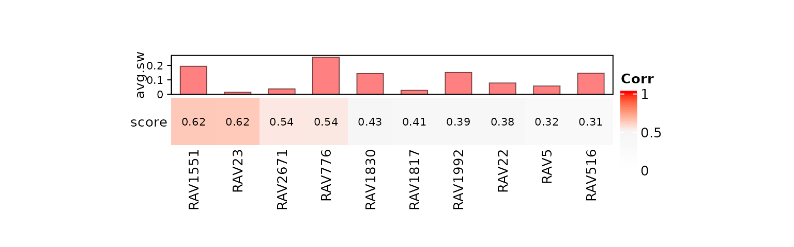

vignettes/SLE-WB/neutrophil_counts_SLE-WB.Rmd
neutrophil_counts_SLE-WB.RmdIn this vignette, we reproduce Figure 3B and 3C of the multiPLIER paper and expand the analysis using GenomicSuperSignature. Analyses here are referencing scripts in this vignette.
if (!"GenomicSuperSignaturePaper" %in% installed.packages())
devtools::install_github("shbrief/GenomicSuperSignaturePaper")
suppressPackageStartupMessages({
library(GenomicSuperSignature)
library(GenomicSuperSignaturePaper)
library(dplyr)
})To directly compare with the results from multiPLIER paper, we used the RAVmodel annotated with the same priors: bloodCellMarkersIRISDMAP, svmMarkers, and canonicalPathways.
RAVmodel <- getModel("PLIERpriors", load=TRUE)
RAVmodel#> class: PCAGenomicSignatures
#> dim: 13934 4764
#> metadata(7): cluster size ... updateNote version
#> assays(1): RAVindex
#> rownames(13934): CASKIN1 DDX3Y ... CTC-457E21.9 AC007966.1
#> rowData names(0):
#> colnames(4764): RAV1 RAV2 ... RAV4763 RAV4764
#> colData names(4): RAV studies silhouetteWidth gsea
#> trainingData(2): PCAsummary MeSH
#> trainingData names(536): DRP000987 SRP059172 ... SRP164913 SRP188526
updateNote(RAVmodel)#> [1] "536 refine.bio studies/ top 90% varying genes/ GSEA with 3 priors from PLIER (bloodCellMarkersIRISDMAP, svmMarkers, and canonicalPathways)"Processed expression data is downloaded from here.
fname <- "data/SLE_WB_all_microarray_QN_zto_before_with_GeneSymbol.pcl"
exprs <- readr::read_tsv(fname) %>% as.data.frame
rownames(exprs) <- exprs$GeneSymbol
dataset <- as.matrix(exprs[,3:ncol(exprs)]) # 15,825 genes x 1,640 samples
dataset[1:2, 1:4]#> GSM955680_DNA10204-001.CEL GSM955681_DNA10204-003.CEL
#> NAT2 0.2872200 0.6788542
#> ADA 0.7331941 0.6073631
#> GSM955682_DNA10204-005.CEL GSM955683_DNA10204-007.CEL
#> NAT2 0.0000000 0.4627302
#> ADA 0.5483356 0.4294504Metadata is downloaded from here.
meta <- read.table("data/E-GEOD-65391.sdrf.txt", sep = "\t", header = TRUE)
dim(meta) # 966 samples have metadata#> [1] 996 224Neutrophil count itself showed a somewhat weak correlation, and the authors suggest that it is likely because neutrophils are terminally differentiated cells, so it is a limitation of using gene expression as a measure of neutrophil count rather than a limitation intrinsic to PLIER models or the multiPLIER approach.
Use MCPcounter to estimate cell type abundance in solid tissues.
## Get cell type estimates with MCPcounter
mcp.results <- MCPcounter::MCPcounter.estimate(expression = dataset,
featuresType = "HUGO_symbols")
## Subset only the neutrophil estimates
neutrophil.df <- reshape2::melt(mcp.results) %>%
dplyr::filter(Var1 == "Neutrophils") %>%
dplyr::select(-Var1)
colnames(neutrophil.df) <- c("Sample", "Neutrophil_estimate")In this exploratory data analysis section, we identified RAV1551 as the one best explaining SLE-WB data and it’s neutrophil count feature. We used three different ways to narrow down the candidate RAVs:
We collected top 10 validated RAVs with positive average silhouette width. Here, RAV1551 shows the highest score with the positive average silhouette width.
val_all <- validate(dataset, RAVmodel)
validated_ind <- validatedSignatures(val_all, num.out = 10,
swCutoff = 0, indexOnly = TRUE)
validated_ind#> [1] 1551 23 2671 776 1830 1817 1992 22 5 516
heatmapTable(val_all, num.out = 10, swCutoff = 0)
We search the keyword, ‘neutrophil’, in the GSEA annotation of RAVmodel. When we refine this search within the top 3 enriched pathways (both up- and down- regulated), there are 13 RAVs with two of those three enriched pathways contain ‘neutrophil’ and RAV1551 is one of them.
## RAVs containing the keyword, "neutrophil", within top 3 enriched pathways
findSignature(RAVmodel, "neutrophil", n = 3)#> # of keyword-containing pathways Freq
#> 1 0 4651
#> 2 1 100
#> 3 2 13
## RAVs with two keyword-containing pathways
sig_ind <- findSignature(RAVmodel, "neutrophil", n = 3, k = 2)
sig_ind#> [1] 5 7 24 147 172 216 560 1073 1551 1730 1917 2530 2667We used r-squared value to identify the metadata-associated RAV. (r-squared is the proportion of the variance in the dependent variable that is predictable from the independent variable)
rsq function takes data frame (data argument) where each column represents different variables. rsq calculates the r-squared value between two variables (lv and y.var arguments) and returns the numeric vector of it.
calculateRsq <- function (x, y) cor(x, y) ^ 2
rsq <- function(data, lv, y.var = "Neutrophil_estimate") {
res <- calculateRsq(data[, lv], data[, y.var]) %>% round(., 3)
return(res)
}We calculate sample scores from expression profile to quantitatively compare the metadata.
sampleScore <- calculateScore(dataset, RAVmodel)
dim(sampleScore)#> [1] 853 4764
sampleScore[1:4, 1:4]#> RAV1 RAV2 RAV3 RAV4
#> GSM1594269 -0.8040057 0.70872695 -0.7941899 0.6156738
#> GSM1594270 0.9403239 -1.13442804 0.3388302 -0.1309143
#> GSM1594271 -1.1120027 2.28676223 -1.8671431 -1.1363525
#> GSM1594273 0.3042759 -0.01665221 -1.0239362 0.7001629We computed r-squared score between the neutrophil count metadata and all RAVs and selected the top 10.
ss <- as.data.frame(sampleScore)
ss$Source.Name <- rownames(ss)
## Combine neutrophil count and sample scores
ss_count <- dplyr::left_join(neutrophilCount, ss, by = "Source.Name")
## Calculate r-squared value for all RAVs
rsq_count <- sapply(3:ncol(ss_count),
function(x) {rsq(ss_count, x, y.var = "Neutrophil.Count")})
names(rsq_count) <- colnames(ss_count)[3:ncol(ss_count)]
rsq_count <- sort(rsq_count, decreasing = TRUE)
## RAVs with top 10 r-squared value
topRAVs <- head(rsq_count, 10)
topRAVs <- gsub("RAV", "", names(topRAVs)) %>% as.numeric
topRAVs#> [1] 3796 2667 16 7 2684 776 1551 1881 4088 2674Above, we identified RAV1551 in three different approaches. Here, RAV1551 shows the highest r-squared value among all RAVs when compared to neutrophil estimate. This confirms that RAV1551 best represent neutrophil feature.
sampleScore.df <- sampleScore %>% as.data.frame(.) %>%
tibble::rownames_to_column(.)
colnames(sampleScore.df)[1] <- "Sample"
## Join all the scores with neutrophil estimates
dat_n.estimate <- dplyr::inner_join(neutrophil.df, sampleScore.df, by="Sample")
dim(dat_n.estimate)#> [1] 853 4766
dat_n.estimate[1:4, 1:4]#> Sample Neutrophil_estimate RAV1 RAV2
#> 1 GSM1594269 0.5210433 -0.8040057 0.70872695
#> 2 GSM1594270 0.4624522 0.9403239 -1.13442804
#> 3 GSM1594271 0.6052038 -1.1120027 2.28676223
#> 4 GSM1594273 0.3782767 0.3042759 -0.01665221
## RAVs the high r-squared value with the neutrophil estimate
rsq_estimate <- sapply(3:ncol(dat_n.estimate), function(x) {rsq(dat_n.estimate,x)})
names(rsq_estimate) <- colnames(dat_n.estimate)[3:ncol(dat_n.estimate)]
rsq_estimate <- sort(rsq_estimate, decreasing = TRUE)
head(rsq_estimate)#> RAV1551 RAV7 RAV1073 RAV2632 RAV23 RAV2671
#> 0.816 0.813 0.804 0.797 0.795 0.779We recovered RAV1551 as a neutrophil-associated signature through validation, GSEA, and metadata-association. This result is confirmed again with the highest r-squared value between RAV1551 and neutrophil estimate.
drawWordcloud(RAVmodel, 1551)All the enriched pathways for RAV1551 with the minimum p-value of 1.8277512^{-9}
#> [1] "IRIS_Neutrophil-Resting"
#> [2] "IRIS_Monocyte-Day0"
#> [3] "SVM Neutrophils"
#> [4] "DMAP_MONO2"
#> [5] "SVM Monocytes"
#> [6] "DMAP_GRAN2"
#> [7] "DMAP_MONO1"
#> [8] "IRIS_Monocyte-Day1"
#> [9] "IRIS_Monocyte-Day7"
#> [10] "REACTOME_METABOLISM_OF_PROTEINS"
#> [11] "REACTOME_INFLUENZA_LIFE_CYCLE"
#> [12] "MIPS_55S_RIBOSOME_MITOCHONDRIAL"
#> [13] "REACTOME_TRANSLATION"
#> [14] "REACTOME_3_UTR_MEDIATED_TRANSLATIONAL_REGULATION"
#> [15] "DMAP_TCELLA2"
#> [16] "REACTOME_INFLUENZA_VIRAL_RNA_TRANSCRIPTION_AND_REPLICATION"
#> [17] "MIPS_NOP56P_ASSOCIATED_PRE_RRNA_COMPLEX"
#> [18] "REACTOME_NONSENSE_MEDIATED_DECAY_ENHANCED_BY_THE_EXON_JUNCTION_COMPLEX"
#> [19] "KEGG_RIBOSOME"
#> [20] "MIPS_RIBOSOME_CYTOPLASMIC"
#> [21] "REACTOME_PEPTIDE_CHAIN_ELONGATION"
#> [22] "REACTOME_SRP_DEPENDENT_COTRANSLATIONAL_PROTEIN_TARGETING_TO_MEMBRANE"NES-ranked, keyword-containing pathways were placed 1,3 out of 22
#> Description NES qvalues
#> IRIS_Neutrophil-Resting IRIS_Neutrophil-Resting 4.253400 1.827751e-09
#> SVM Neutrophils SVM Neutrophils 3.311116 1.827751e-09
annotatePC(1:8, val_all = val_all, RAVmodel = RAVmodel, scoreCutoff = 0)#> PC1.RAV1551 PC2.RAV1875
#> 1 IRIS_Neutrophil-Resting REACTOME_METABOLISM_OF_PROTEINS
#> 2 IRIS_Monocyte-Day0 REACTOME_METABOLISM_OF_RNA
#> 3 SVM Neutrophils REACTOME_METABOLISM_OF_MRNA
#> 4 DMAP_MONO2 KEGG_OXIDATIVE_PHOSPHORYLATION
#> 5 SVM Monocytes MIPS_55S_RIBOSOME_MITOCHONDRIAL
#> PC3.RAV516 PC4.RAV2905
#> 1 REACTOME_CELL_CYCLE_MITOTIC DMAP_ERY5
#> 2 REACTOME_CELL_CYCLE DMAP_ERY4
#> 3 REACTOME_DNA_REPLICATION DMAP_ERY3
#> 4 REACTOME_MITOTIC_M_M_G1_PHASES <NA>
#> 5 REACTOME_CYTOKINE_SIGNALING_IN_IMMUNE_SYSTEM <NA>
#> PC5.RAV1925 PC6.RAV1830
#> 1 IRIS_Neutrophil-Resting REACTOME_CELL_CYCLE
#> 2 REACTOME_GPCR_DOWNSTREAM_SIGNALING REACTOME_INTERFERON_SIGNALING
#> 3 REACTOME_SIGNALING_BY_GPCR REACTOME_CELL_CYCLE_MITOTIC
#> 4 REACTOME_CYTOKINE_SIGNALING_IN_IMMUNE_SYSTEM REACTOME_DNA_REPLICATION
#> 5 DMAP_ERY3 REACTOME_MITOTIC_M_M_G1_PHASES
#> PC7.RAV519 PC8.RAV4094
#> 1 DMAP_ERY3 DMAP_ERY3
#> 2 REACTOME_CELL_CYCLE DMAP_ERY5
#> 3 REACTOME_METABOLISM_OF_LIPIDS_AND_LIPOPROTEIN... DMAP_ERY4
#> 4 REACTOME_METABOLISM_OF_AMINO_ACIDS_AND_DERIVA... DMAP_MONO2
#> 5 REACTOME_INNATE_IMMUNE_SYSTEM IRIS_Neutrophil-Resting
annotatePC(1, val_all = val_all, RAVmodel = RAVmodel, simplify = FALSE)#> $`PC1-RAV1551`
#> Description NES pvalue qvalues
#> 1 IRIS_Neutrophil-Resting 4.253400 1e-10 1.827751e-09
#> 2 IRIS_Monocyte-Day0 3.452230 1e-10 1.827751e-09
#> 3 SVM Neutrophils 3.311116 1e-10 1.827751e-09
#> 4 DMAP_MONO2 3.153644 1e-10 1.827751e-09
#> 5 SVM Monocytes 3.107646 1e-10 1.827751e-09#> R version 4.1.0 (2021-05-18)
#> Platform: x86_64-pc-linux-gnu (64-bit)
#> Running under: Ubuntu 18.04.5 LTS
#>
#> Matrix products: default
#> BLAS: /usr/lib/x86_64-linux-gnu/openblas/libblas.so.3
#> LAPACK: /usr/lib/x86_64-linux-gnu/libopenblasp-r0.2.20.so
#>
#> locale:
#> [1] LC_CTYPE=en_US.UTF-8 LC_NUMERIC=C
#> [3] LC_TIME=en_US.UTF-8 LC_COLLATE=en_US.UTF-8
#> [5] LC_MONETARY=en_US.UTF-8 LC_MESSAGES=en_US.UTF-8
#> [7] LC_PAPER=en_US.UTF-8 LC_NAME=C
#> [9] LC_ADDRESS=C LC_TELEPHONE=C
#> [11] LC_MEASUREMENT=en_US.UTF-8 LC_IDENTIFICATION=C
#>
#> attached base packages:
#> [1] parallel stats4 stats graphics grDevices utils datasets
#> [8] methods base
#>
#> other attached packages:
#> [1] dplyr_1.0.7 GenomicSuperSignaturePaper_1.0.0
#> [3] GenomicSuperSignature_1.1.4 SummarizedExperiment_1.22.0
#> [5] Biobase_2.52.0 GenomicRanges_1.44.0
#> [7] GenomeInfoDb_1.28.1 IRanges_2.26.0
#> [9] S4Vectors_0.30.0 BiocGenerics_0.38.0
#> [11] MatrixGenerics_1.4.0 matrixStats_0.59.0
#> [13] BiocStyle_2.20.2
#>
#> loaded via a namespace (and not attached):
#> [1] colorspace_2.0-2 ggsignif_0.6.2 rjson_0.2.20
#> [4] ellipsis_0.3.2 rio_0.5.27 rprojroot_2.0.2
#> [7] circlize_0.4.13 XVector_0.32.0 GlobalOptions_0.1.2
#> [10] fs_1.5.0 rstudioapi_0.13 clue_0.3-59
#> [13] farver_2.1.0 ggpubr_0.4.0 bit64_4.0.5
#> [16] fansi_0.5.0 splines_4.1.0 codetools_0.2-18
#> [19] doParallel_1.0.16 cachem_1.0.5 knitr_1.33
#> [22] jsonlite_1.7.2 Cairo_1.5-12.2 broom_0.7.8
#> [25] cluster_2.1.2 dbplyr_2.1.1 png_0.1-7
#> [28] readr_1.4.0 BiocManager_1.30.16 compiler_4.1.0
#> [31] httr_1.4.2 backports_1.2.1 assertthat_0.2.1
#> [34] Matrix_1.3-4 fastmap_1.1.0 cli_3.0.0
#> [37] htmltools_0.5.1.1 tools_4.1.0 gtable_0.3.0
#> [40] glue_1.4.2 GenomeInfoDbData_1.2.6 reshape2_1.4.4
#> [43] rappdirs_0.3.3 Rcpp_1.0.7 carData_3.0-4
#> [46] cellranger_1.1.0 jquerylib_0.1.4 pkgdown_1.6.1
#> [49] vctrs_0.3.8 nlme_3.1-152 iterators_1.0.13
#> [52] xfun_0.24 stringr_1.4.0 openxlsx_4.2.4
#> [55] lifecycle_1.0.0 rstatix_0.7.0 zlibbioc_1.38.0
#> [58] scales_1.1.1 ragg_1.1.3 hms_1.1.0
#> [61] RColorBrewer_1.1-2 ComplexHeatmap_2.8.0 yaml_2.2.1
#> [64] curl_4.3.2 memoise_2.0.0 ggplot2_3.3.5
#> [67] sass_0.4.0 stringi_1.6.2 RSQLite_2.2.7
#> [70] highr_0.9 desc_1.3.0 foreach_1.5.1
#> [73] filelock_1.0.2 zip_2.2.0 shape_1.4.6
#> [76] rlang_0.4.11 pkgconfig_2.0.3 systemfonts_1.0.2
#> [79] bitops_1.0-7 evaluate_0.14 lattice_0.20-44
#> [82] purrr_0.3.4 labeling_0.4.2 bit_4.0.4
#> [85] tidyselect_1.1.1 plyr_1.8.6 magrittr_2.0.1
#> [88] bookdown_0.22 R6_2.5.0 magick_2.7.2
#> [91] generics_0.1.0 DelayedArray_0.18.0 DBI_1.1.1
#> [94] mgcv_1.8-36 pillar_1.6.1 haven_2.4.1
#> [97] foreign_0.8-81 abind_1.4-5 RCurl_1.98-1.3
#> [100] tibble_3.1.2 crayon_1.4.1 car_3.0-11
#> [103] wordcloud_2.6 utf8_1.2.1 BiocFileCache_2.0.0
#> [106] rmarkdown_2.9 GetoptLong_1.0.5 grid_4.1.0
#> [109] readxl_1.3.1 data.table_1.14.0 blob_1.2.1
#> [112] forcats_0.5.1 digest_0.6.27 MCPcounter_1.1.0
#> [115] tidyr_1.1.3 textshaping_0.3.5 munsell_0.5.0
#> [118] bslib_0.2.5.1